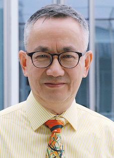

He held academic positions at Beijing Normal – Hong Kong Baptist University (China, 2021）, the University of Texas at Dallas (USA, 2000-2021, now as Professor Emeritus), Macquarie University (Australia, 1991-2000), and Science and Engineering Research Council (UK, 1991). His research interests are interdisciplinary, including visual languages, computational aesthetics, generative art and design, and aesthetic measurement. He has been invited to deliver keynotes at many arts, design, management, and computer science conferences; and published 8 books and over 120 journal papers in different subject areas, including architecture, art, design, engineering, information, and psychology. His works have won numerous art and design awards.
"AI and Art" interviewed by VEJA Magazine of Brazil during Rio Innovation Week 2025.
张康博士现任香港科技大学（广州）信息枢纽计算媒体与艺术学域 教授；香港科技大学新兴跨学科领域教授；美国University of Texas at Dallas计算机科学系荣誉教授(至2021年为终身教授)；中国美术学院文创中心客座教授。曾担任过福布莱特杰出讲座教授(Fulbright Distinguished Chair)，在英国、澳大利亚、和美国任教36年。
他的研究跨越计算机、心理学、建筑、管理、艺术、和设计等学科, 应邀在多个计算机科学、艺术设计和管理科学国际会议上发表主旨演讲。现任多个国际期刊副主编和编委，国家社科基金重大项目首席专家。他的油画和书法作品曾于1980年代获得过省级大奖，他团队的可视分析作品曾获得国际大赛VAST Challenge 2014最高奖，他关于康定斯基字体的平面设计曾获2021国际二等奖。张教授还入选2023-2025斯坦福全球前2%顶尖科学家终身影响力榜单。
本校新闻：张康：在港科大（广州），计算机学者回归艺术“本心”
In his spare time, Kang likes to swim, play Pickleball, travel (see his travel page), and play Go, Guandan, and Bridge. Oil painting (won 3rd Prize in Shanghai in 1984. His recent works), paper art, logo design, porcelain painting, and Chinese calligraphy (won 1st Prize in Sichuan Province in 1981. The style Kang learnt is Liu Gongquan) (his own works in Regular Script, Clerical Script1, and Clerical Script2), and photography are his real hobbies.
Zhang's (co-)authored or (co-)edited books: |
{kind=link}
{kind=link}
{kind=link}
{kind=link}